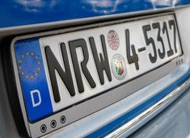
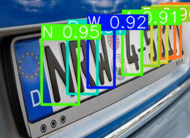

import glob
import os
import cv2
import matplotlib.pyplot as plt
import numpy as np
import pandas as pd
import torch
from PIL import Image
from tqdm import tqdm
from yoloNpdOCR.config import Config
from yoloNpdOCR.my_yolo_ocr import MyYoloOCR
tqdm.pandas()Inferencing finetuned YoloV5
cnfg = Config()Make Data Df
all_files = []
for file in [f for f in glob.glob(f"{cnfg.test_data_path}*.jpg")] + [
f for f in glob.glob(f"{cnfg.test_data_path}*.png")
]:
all_files.append(file)df_dict = {
"images": [os.path.basename(x) for x in all_files],
"labels": [os.path.splitext(os.path.basename(x))[0].upper() for x in all_files],
}df = pd.DataFrame(df_dict)df.head()| images | labels | |
|---|---|---|
| 0 | hgaa7034.jpg | HGAA7034 |
| 1 | ancl550.jpg | ANCL550 |
| 2 | hrod819.jpg | HROD819 |
| 3 | map7563.jpg | MAP7563 |
| 4 | mbcl600.jpg | MBCL600 |
df["labels"] = df.labels.apply(lambda x: x.replace("-", "")) # process labelsMain Pipeline
yolo_ocr = MyYoloOCR(weights_file_location=cnfg.weights_path)Downloading: "https://github.com/ultralytics/yolov5/zipball/master" to /home/rohit/.cache/torch/hub/master.zip
YOLOv5 🚀 2024-5-8 Python-3.10.6 torch-2.3.0+cu121 CUDA:0 (NVIDIA GeForce RTX 3090, 24258MiB)
Fusing layers...
YOLOv5s summary: 157 layers, 7112611 parameters, 0 gradients, 16.1 GFLOPs
Adding AutoShape... sample = df.sample(1).iloc[0]
sample_img_path = f"{cnfg.base_data_path}{sample.images}"
sample_img_path'../data/np_char_datasets/aba1234.jpg'sample_img_path = "../data/eu-license-plates/eu/de/nrw4-5317.jpg"pil_im = Image.open(sample_img_path)
pil_im
yolo_ocr.get_number_plate_text(img_path=sample_img_path, show_result=True)
'NRW45311'Apply OCR To All Images
def apply_ocr_to_all(x: str, ocr):
"""
x: image name
"""
img_path = f"{cnfg.test_data_path}{x}"
res = ocr.get_number_plate_text(img_path)
return resdf["yolo_res"] = df.images.progress_apply(lambda x: apply_ocr_to_all(x, yolo_ocr))100%|█████████████████████████████████████████████████████████████████████████████████████████████████████████████████████████████████████████████████████████████████████████████████████████████████████████████████████████| 51/51 [00:00<00:00, 61.96it/s]df.head()| images | labels | yolo_res | |
|---|---|---|---|
| 0 | hgaa7034.jpg | HGAA7034 | HGAA7034 |
| 1 | ancl550.jpg | ANCL550 | ANCL550 |
| 2 | hrod819.jpg | HROD819 | HR0D819 |
| 3 | map7563.jpg | MAP7563 | MAP7563 |
| 4 | mbcl600.jpg | MBCL600 | MBCL600 |
df["yolo_res_match"] = df.apply(lambda x: 1 if x.labels == x.yolo_res else 0, axis=1)df.yolo_res_match.value_counts(normalize=True)yolo_res_match
1 0.882353
0 0.117647
Name: proportion, dtype: float64df[df.yolo_res_match == 0]| images | labels | yolo_res | yolo_res_match | |
|---|---|---|---|---|
| 2 | hrod819.jpg | HROD819 | HR0D819 | 0 |
| 12 | o2.jpg | O2 | 0O2 | 0 |
| 19 | fbck80.jpg | FBCK80 | FBCK8D | 0 |
| 21 | nrw4-5317.jpg | NRW45317 | NRW45311 | 0 |
| 38 | aaaa111.jpg | AAAA111 | AAAA1III | 0 |
| 50 | m230.png | M230 | 23 | 0 |